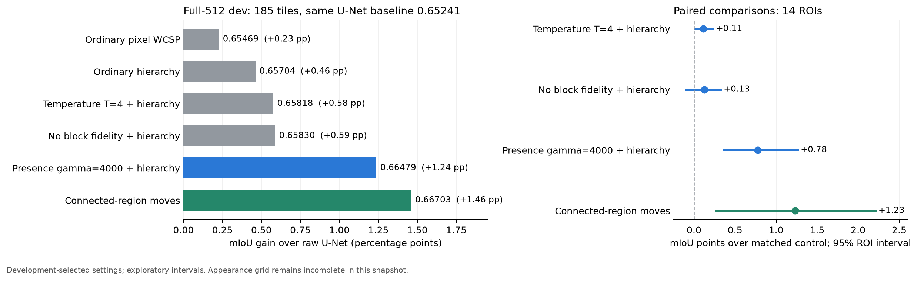
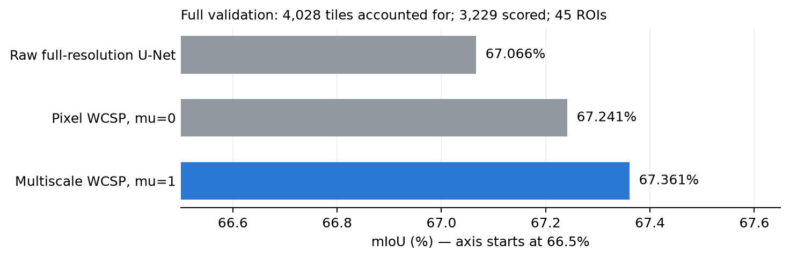

BCSS full-resolution corrections · details
BCSS full-resolution correction experiments
Current finding: connected-region moves and tile-level class context give the strongest completed development results. These new choices have not yet been evaluated on the full validation set.
Data and comparison protocol
- Official upstream BCSS preparation v2: 151 ROIs, 0.25 MPP, nonoverlapping 512×512 tiles; 7,768 fit / 1,012 dev / 4,028 validation tiles.
- The full-resolution head and backbone were already trained. Every correction arm reuses the same frozen checkpoint and probability maps and scores the entire 512×512 field. No central crop or new U-Net training is used here.
- Correction selection uses 185 frozen dev tiles from 14 ROIs, a fixed subset of the 1,012 dev tiles. The U-Net baseline on this subset is 0.652414 mIoU. Do not compare it directly with the recap's 0.7067.
- Priors and the independent appearance model use the fit split only. Aggregate accuracy is reported only after all 185 tiles of an arm finish. Paired intervals resample whole ROIs (2,000 replicates, seed 0).
- Snapshot: 34/40 correction configurations complete, 6,323/7,400 tile solves, November 23 at 15:16 PST. The remaining appearance configurations are still running. The earlier expanded sweep finished all 3,145 solves.
The earlier 0.6610 presence pilot used the existing prior and an area-scaled fixed gamma. The following sweep refits a full-field fit prior, varies gamma on dev, and uses audited convergence with matched controls.
What the new methods change
| Family | Change | Configurations |
|---|---|---|
| Temperature | Soften U-Net probabilities before constructing costs; makes class changes cheaper | T={1,1.5,2,3,4}, mu={0,1}: 10 |
| Block fidelity | Reduce the coarse blocks' own pooled U-Net costs; retain their neighbor and parent–child links | block_alpha={0,0.25,0.5}, mu=1: 3; alpha=1 control shared |
| Class presence | Choose an allowed class set using fit-split co-occurrence costs plus pixel evidence, then spatially optimize | gamma={40,120,400,1200,4000,12000}, mu={0,1}: 12 |
| Region moves | Propose changing a connected same-label region or an image-derived SLIC segment together | Two region types, mu={0,1}: 4 |
| Image-aware boundaries | Add disagreement costs between pixels with similar HED stain features | beta={1,4}, mu={0,1}: 4 |
| Independent regional evidence | Blend U-Net costs with a fit-only HED/texture classifier pooled within SLIC segments | weights={0.1,0.3,1}, mu={0,1}: 6, plus 1 appearance-only control |
All 40 arms use lambda=8; mu=0 disables parent–child coupling and mu=1 enables it. Temperature and appearance also change the evidence reconstructed for coarse blocks. Block-alpha isolates their direct fidelity weight.
Region moves: first reach an ordinary single-variable local minimum. Then test up to two passes over the 32 largest eligible regions (at least 64 pixels). Try each tissue label for the entire region, alone or together with coarse blocks at least half covered by it. Accept a proposal only when the exact full objective decreases, then resume pixel/coarse descent. The final assignment is audited for single-variable stationarity; the bounded proposal search does not establish a global or region-wise optimum. This is different from the recap's SLIC cluster solver: the strongest new result uses connected components of the current labels, not SLIC.
Presence: the full-field prior uses 6,888 fit tiles with at least 1,000 labeled pixels; a class is present when it occupies at least 1% of labeled area. All 31 nonempty class sets are considered with add-one smoothing. Selection is a two-stage approximation: choose an allowed set from unary evidence and the prior, then impose a finite 1,000 exclusion cost on other labels. Every result checks that excluded labels do not survive. This does not jointly optimize class-set selection with the spatial energy.
Appearance: a diagonal Gaussian classifier uses HED channels, local means and local standard deviations. Of 288 fit tiles, 256 fit its parameters and 32 calibrate its temperature. Development RGB and annotations must align exactly with the frozen inputs; dev annotations score results but do not construct regions or appearance evidence. This is an independent shallow appearance model, not another U-Net training arm.
Completed development results
| Method | mIoU | Change vs. U-Net |
|---|---|---|
| Raw full-resolution U-Net | 0.652414 | — |
| Ordinary pixel WCSP, mu=0 | 0.654691 | +0.002276 |
| Ordinary hierarchy, mu=1 | 0.657038 | +0.004624 |
| Best expanded lambda/mu grid: lambda=16, mu=2 | 0.657713 | +0.005299 |
| Temperature T=4 + hierarchy | 0.658183 | +0.005768 |
| No block fidelity + hierarchy | 0.658301 | +0.005886 |
| Presence gamma=4000 + hierarchy | 0.664791 | +0.012376 |
| Connected-region moves, mu=0 | 0.667026 | +0.014611 |
| HED boundary beta=1 + hierarchy | 0.656998 | +0.004584 |
| Appearance weight=0.1, mu=0; family incomplete | 0.655015 | +0.002600 |

| Comparison | Change in mIoU | 95% paired ROI interval |
|---|---|---|
| Region moves minus ordinary pixel WCSP | +0.012335 | [+0.002673, +0.022119] |
| Presence + hierarchy minus ordinary hierarchy | +0.007752 | [+0.003623, +0.012651] |
| T=4 minus T=1, both with hierarchy | +0.001144 | [+0.000158, +0.002339] |
| No block fidelity minus ordinary block fidelity | +0.001262 | [−0.000969, +0.003266] |
These are development-selected, exploratory intervals, without correction for selecting settings across the sweep. Removing block fidelity improves the point estimate but its interval includes zero. HED boundary terms did not consistently improve the hierarchy. The appearance grid is incomplete.
The convergence experiment adds a small gain: mu=1 reaches 0.657038 at convergence versus 0.656822 after four outer rounds. More iterations alone do not explain the larger region-move or presence gains.
Corrections, failures and region interiors
- Region moves fix 601,023 previously wrong pixels and break 404,681 previously correct pixels, relative to the raw U-Net. The matched pixel control fixes 154,373 and breaks 112,729. A separate energy audit found lower pixel energy on 154 tiles, ties on 31, and no increases; 780 region proposals were accepted across the cohort. See the per-tile energy audit.
- Presence + hierarchy fixes 425,280 and breaks 231,814 pixels versus the raw U-Net. More than 10 pixels from a raw prediction boundary, it fixes 34,715 and breaks 3,170 pixels. The ordinary hierarchy fixes 15 and breaks 11 in those interiors.
- Region moves also change interiors, but their interior fixes and breaks are close (76,898 versus 76,175). Their benefit cannot be summarized as uniformly fixing large regions. Report per-class IoU and both fixes and breaks alongside pooled mIoU; energy reduction alone is not correctness.

Examples are the median positive and median negative per-tile mIoU change against the matched pixel control, selected after inspecting dev outcomes. They illustrate behavior, not independent evidence. The edit map is relative to that pixel control: green=fix, red=break, orange=wrong-to-wrong. Ignored annotation pixels are gray. Exact IDs and selection counts are in region_examples.json.
Established full-validation result
The earlier frozen validation protocol accounts for all 4,028 tiles from 45 held-out ROIs, scoring 3,229 with labeled pixels and excluding 799 wholly ignored tiles. It uses the trained full-512 checkpoint, lambda=8, T=1 and the dev-selected mu=1 setting with the historical four-round limits.
| Full-validation method | mIoU |
|---|---|
| Raw full-resolution U-Net | 0.670665 |
| Pixel WCSP, mu=0 | 0.672414 |
| Multiscale WCSP, mu=1 | 0.673607 |
| New presence / region-move candidates | Not evaluated on full validation yet |

The established improvement over the U-Net is +0.002942 mIoU, with 95% ROI interval [+0.002218, +0.003615]. The 0.667026 new dev score and 0.673607 validation score describe different populations and must not be ranked against one another.
Next: finish the appearance grid, freeze the final development choices, and evaluate the region-move and presence candidates with their matched controls on the full validation set. Do not select settings using those validation outcomes.
Portable evidence: correction snapshot,
completed expanded sweep,
validation summary,
and frozen provenance.
Raw images, probability caches and per-tile predictions remain local.
Rebuild the charts with python deliverables/figures_20261123/make_full512_figures.py;
the qualitative figure additionally needs --cache-root pointing to the
original experiment checkout. The frozen experiment source hashes predate
the upstream solver updates; existing output roots must retain those sources.
Sync this section and its figures into the GitHub Pages version with
python deliverables/figures_20261123/sync_full512_pages.py (requires mistune).
The training-loss arms in the preceding BCSS section use the original
central-256 architecture/field, separately from this full-512 post-processing
protocol (experiments/bcss_wcsp/slurm/train_loss_arms.sbatch).